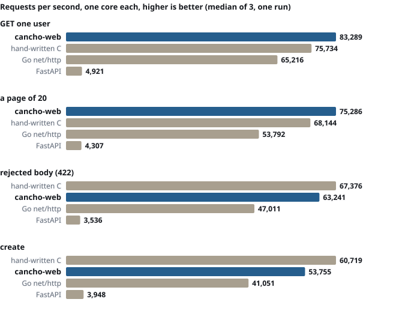

Declare the API once.
cancho-web makes the API boundary a checked artifact of the program. One declaration defines the route, checks its inputs, generates the OpenAPI document, and is what CI tests. Write it once. Serve it. Document it. Test it.
$ curl -si -XPOST -H 'Content-Type: application/json' \ -d '{"name":"","age":151,"role":"root","nope":1}' \ localhost:8080/users HTTP/1.1 422 Unprocessable Content Content-Type: application/problem+json {"status":422,"count":4,"errors":[ {"pointer":"/name","code":"min_length",…}, {"pointer":"/age","code":"maximum",…}, {"pointer":"/role","code":"choice",…}, {"pointer":"/nope","code":"unknown",…}]} # (type, title and each detail left out here) $ curl -s localhost:8080/openapi.json | … 3.1.0 ['/health', '/users', '/users/{id}']
One declaration
The route, its parameters, body and responses, written once as data. The router and the OpenAPI 3.1 document are both made from it, so a route cannot be served and undocumented.
One boundary
A path, query or header parameter that breaks its schema never reaches the handler: it is a 422 that lists every error, each with where it is. A body is checked by the same schema nodes before anything is stored.
One contract
The served OpenAPI document is a file in the repository, and a test compares the two byte for byte. Every response in the tests must be one the document declares, and a generator tries to break it.
What a request meets.
| When | What the service answers |
|---|---|
| A body breaks the schema | 422 with every error and its pointer. An unknown key is an error too. |
| The body is not JSON, or the content type is not | 400 with the byte it failed at; 415 for another content type. |
| A path, query or header parameter breaks its schema, a query key is unknown or repeated | 422 from web.dispatch, before the handler runs: every error, each at /query/limit, /path/id or /header/… with a code (maximum, type, unknown, duplicate). A client that misspells limit is told, not served the default. |
| No such route, or the wrong method | 404 as problem+json; 405 with Allow. Both written by dispatch. |
| A user is deleted | 204 with no body and neither Content-Length nor Content-Type, framed correctly even when pipelined. |
| The store is full | 503, not a crash. The example holds up to 100,000 users or 64 MiB. |
| A route is added to the declaration | It is in /openapi.json. A route that is served and deliberately not documented (the document itself) is declared internal. |
How it works
The application keeps its loop. web declares, routes, documents and judges parameters: web.dispatch is called in the loop where web.find was.
The declaration, in code
let (api, op) = web.operation(heap, api,
"GET", "/users/:id", "getUser");
api = web.path_param(heap, api, op, "id", path_id);
api = web.respond(heap, api, op, 200, "the user", user);
api = web.respond_problem(heap, api, op, 404);
api = web.respond_problem(heap, api, op, 422);
// in the loop: the route, with its parameters judged
let (routed, id) = web.dispatch(heap, api, sc, request,
table, params, args, scratch, out, keep);
if id == web.answered() { return routed; } // 404, 405, 422
let id_value = web.int_arg(args, id_slot); // valid, 1..99path_id and user are cancho-schema nodes: the ones that validate are the ones that appear in the document. dispatch keeps nothing and allocates nothing for a request that is fine.Why the loop is the application’s: a framework that owned it would hand each handler a view of buffers the handler cannot name a region for, which does not type-check in cancho today (design §2). So a handler is an ordinary function the application calls, and what it can touch is in its signature.
We hold it to its own contract.
The real binary on a real socket, a real HTTP client, and a generator that reads the served OpenAPI document and sends requests the document allows and ones it does not. A response the document does not declare fails the test.
openapi.json, and validates as OpenAPI 3.1dispatch and the code under it, each caught by a testWhat the tests cover, what they found, and what is not claimed
What building it found
150.0is an integer in JSON Schema and string length counts code points: both were wrong incancho-schema, and the schema's own tests had been shaped to agree. Schemathesis disagreed on the first run.- A float-spelled integer read as
0and would have stored"age": 0silently. - No
204was possible:http.respond_headalways wroteContent-Length. Fixed in cancho. - The comparison with Go found the page endpoint at 0.62× of it, for two reasons, one in the example and one in cancho’s
std.buffer. Both fixed.
What it disproved
- That a framework can own the loop and call a handler: it does not type-check, and the reason was reproduced, not assumed.
- That a validated value should be validated again on the way out: re-checking the program’s own output held the page endpoint to about 40,000 requests a second; splicing it as bytes made it 62,000.
- That a benchmark number is a measurement because it looks plausible: the load generator once mis-read every response and landed near the right answer.
Where it fits
For a JSON API whose contract you want to be a file that CI checks, on a service that has to be small and auditable. Not yet for the public edge, and not where you need what FastAPI’s ecosystem gives. Speed is the supporting evidence below, not the argument.
| FastAPI | Go net/http | cancho-web | |
|---|---|---|---|
| API declaration | Decorated functions and pydantic models | Handlers; the contract is written separately, or by a library | Operation declarations, as data |
| OpenAPI | Generated from those declarations | A separate tool or library | Generated from the same declaration, and a file that a test compares byte for byte |
| Input validation | A model layer, before the handler | By hand, or a library | The schema nodes that document the input: parameters before the handler, bodies in its first lines |
| What the service may touch | Not stated | Not stated | The compiler’s report: no foreign code, no files |
| Runtime model | async on an event loop | Goroutines | One explicit loop and one thread; more cores are more processes or threads |
| Ecosystem | Huge | Huge | Tiny: one example service, and the API of cancho-hooks |
| A read on one core, this VM | 4,921 a second | 65,216 | 83,289 |
FastAPI also generates its document from its declarations, so the difference is not that the others drift. It is that here the declaration is data and not reflection, the document is a file CI compares, and the compiler says what the program behind it can reach. What you give up: dependency injection, middleware, async, authentication, a docs UI, defaults declared once, and an ecosystem. One thread, a Poller: more cores are more processes (reuseport) or, in examples/users_threads, the same loop in two threads (cancho has threads; that example shares no state, so it is not a deployable service).
Built for
- JSON APIs behind a TLS-terminating front
- A contract you want diffed in review
- Services where “what can it touch?” has to have an answer
Not for
- The public edge, until a service is put behind cancho’s TLS server (it exists; this layer has not been tried with it)
- Anything that needs authentication, middleware or dependency injection today
- Streaming bodies, or a store shared between threads
And it is fast, honestly.
One core each, loopback, one 4-vCPU VM, one run (the second; the first is in the evidence), repeats within about 5% (a create up to 10%). Every implementation is first held to do the same work: the same requests, the same statuses and bodies. It is behind a hand-written C server on a rejected body and a create (by 6% and 11%) and ahead of it on a read and a page, and behind Go’s fasthttp on a read and a create (by 11% and 7%, in a later run on another VM).

net/http, with two thirds of its p99Stronger yardsticks than FastAPI. A later run, on a slower VM, added Go’s fasthttp and Rust’s axum (one thread, serde), each held to the same work first. fasthttp served 80,150 reads a second against cancho’s 72,153, and 45,428 creates against 42,562; cancho was ahead on a page of 20 (62,320 against 54,236) and level on a rejected body; axum served 39,747 reads. cancho is in the same league as the Go server written for speed, not above it. The evidence has the table.
None of this measures TLS or a real handler’s work. Two cores each are in the evidence: the gap with FastAPI narrows to 19–25× and does not close. A first run, on a faster VM, had 15–26×: against a Python program the ratio depends on the machine. A service that spends 5 ms in a query is 5 ms slower in all of them.
What you get
Operations
Method, path pattern, an operation id; the route id is what the handler tests.
Typed parameters
Path, query and header parameters with a schema node each, written to the document and checked by dispatch before the handler runs. Values arrive in a slot table, already valid.
Validated bodies
cancho-schema: every error, a JSON Pointer each, strict objects, string length in code points.
problem+json
RFC 9457, with errors and count for a body, and a named Problem component in the document.
OpenAPI 3.1
Generated at start-up, checked against a stock validator, diffed in CI. Components, shared path parameters, response headers, plain-text answers.
Who may call
Bearer schemes and require / no_auth are declared and readable back. Nothing here checks a token.
A package
web is published as a store, so a project names it in cancho.toml instead of copying a file.
PostgreSQL
examples/users_pg is the same API on a table, same document, same tests; optionally a pool so a slow query does not stop the loop.
Try it
Build the pinned compiler and the two packages, then the example:
git clone https://github.com/alpibrusl/cancho
git clone https://github.com/alpibrusl/cancho-schema
git clone https://github.com/alpibrusl/cancho-web && cd cancho-web
pin() { sed -n "s/^ *$1: *//p" .github/workflows/ci.yml; }
(cd ../cancho && git checkout "$(pin CANCHO_REV)" && cargo build --release -p cancho)
(cd ../cancho-schema && git checkout "$(pin SCHEMA_REV)")
export CANCHO=$PWD/../cancho/target/release/cancho
scripts/build.sh examples/users/users.cho build/users
build/users 8080 &
curl -s -XPOST -H 'Content-Type: application/json' -d '{"name":"Ada","age":36}' localhost:8080/usersBuilding needs Rust (the compiler pins its own toolchain). The packages are fetched and checked against deps/*.lock by hash every time. The examples page goes further; the README has the rest.